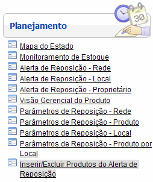
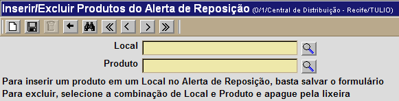
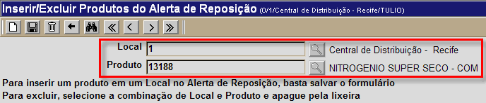
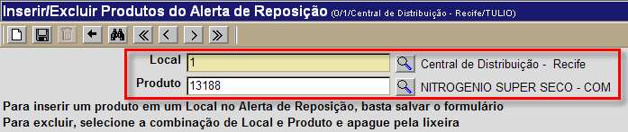

Inserir/Excluir Produtos do Alerta de Reposição [ Voltar ]Utilize esta tela denifir produtos que devem ou não ser exibidos nos alertas de reposição para um local. O formulário "Inserir/Excluir Produtos do Alerta de Reposição" encontra-se dentro do menu "Planejamento". 
Ao clicar no formulário, o sistema exibirá a seguinte tela:  Siga os passos abaixo para definir a exibição de um item no alerta de reposição para um local: 1º Passo: especifique o local e o produto desejados. Para inserir ou excluir um produto do alerta de reposição de um local específico, selecione-os nos campos "Local" e "Produto". Se desejar, clique no botão [Procurar] ao lado do campo, para selecionar produto e local a partir do cadastro dos mesmos. [Procurar] ao lado do campo, para selecionar produto e local a partir do cadastro dos mesmos.Após informar o Local e o Produto, pressione a tecla "Enter" ou clique fora do campo "Produto". Em seguida, repare a coloração dos campos para saber se a relação Local x Produto está ou não cadastrada:
 Neste caso, para excluir o produto em questão do alerta de reposição para o local definido, clique no botão [Excluir].
 Neste caso, se desejar que o produto em questão seja inserido no local em questão, clique no botão  [Salvar]. [Salvar]. |